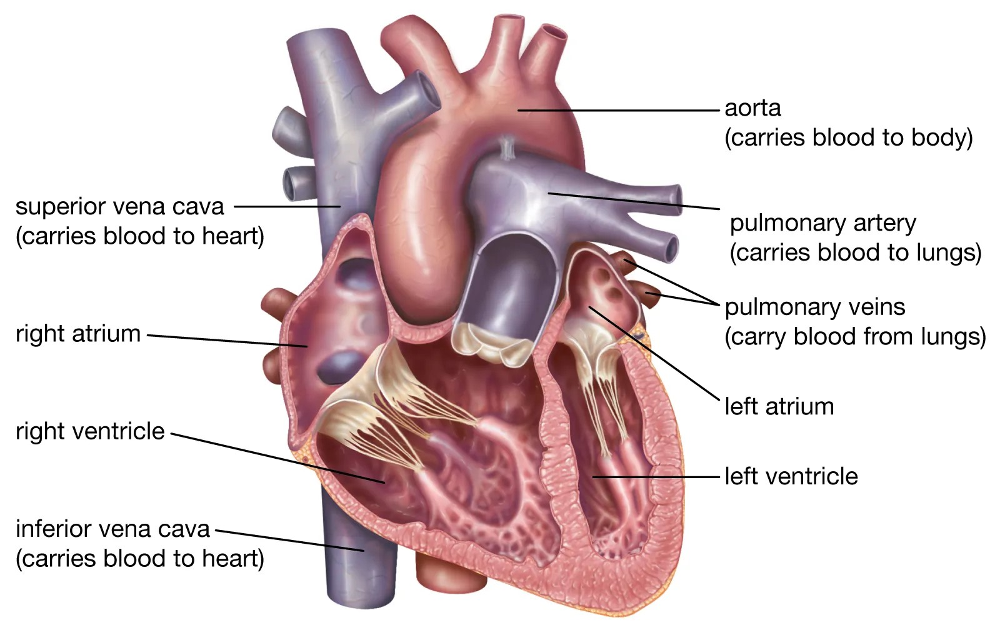

Introduction
The heart is a muscular organ about the size of a fist, located slightly left of the center of your chest. It pumps blood through the network of arteries and veins called the cardiovascular system, ensuring the continuous flow of life-sustaining oxygen and nutrients to every cell in your body. This hardworking organ beats approximately 100,000 times a day, pushing around 5 liters of blood through your body each minute. Its remarkable ability to function tirelessly is due to its unique structure and the synchronized coordination of electrical and mechanical processes. The heart's role is not limited to circulation—it also helps remove carbon dioxide and metabolic waste products, maintaining a balance critical for survival. As a central part of your body’s physiology, the heart is often called the "engine" of life, showcasing its indispensable role in keeping us alive and thriving.
Heart Anatomy
The heart consists of four chambers: two upper chambers called atria and two lower chambers called ventricles. The atria receive blood coming into the heart, while the ventricles pump blood out of the heart to the lungs and the rest of the body. The right atrium and right ventricle handle deoxygenated blood, directing it to the lungs for oxygenation, while the left atrium and left ventricle manage oxygen- rich blood, sending it throughout the body. The chambers are separated by valves— tiny flaps of tissue that open and close to ensure blood flows in one direction, preventing any backflow. These valves include the tricuspid valve, pulmonary valve, mitral valve, and aortic valve. Surrounding the heart, the pericardium—a protective sac—helps cushion and anchor the heart in place, ensuring it functions optimally within the chest cavity. The structure of the heart reflects its critical job, with each chamber and valve uniquely designed to support efficient circulation in a continuous loop.
How the Heart Works
The heart works as follows:
- Deoxygenated blood enters the right atrium through the superior and inferior vena cava.
- The right atrium pumps the blood into the right ventricle, which sends it to the lungs for oxygenation.
- Oxygen-rich blood from the lungs returns to the left atrium, via the pulmonary veins.
- The left atrium pumps blood into the left ventricle, which distributes it to the entire body via the aorta.
- As the left ventricle contracts, it generates the force necessary to propel blood through the aorta and into systemic circulation, delivering oxygen and nutrients to all organs and tissues.
- The aortic valve opens, allowing blood to flow from the left ventricle into the aorta, and then closes to prevent backflow.
- The right ventricle contracts, pushing blood into the pulmonary artery, which carries it to the lungs for oxygenation.
- The pulmonary valve opens to allow blood into the pulmonary artery and closes to prevent blood from flowing back into the right ventricle.
- As blood circulates through the lungs, it picks up oxygen and releases carbon dioxide, a waste product of metabolism.
- Once oxygenated, the blood returns to the left atrium, completing one full cycle of the heart's function.
The process is continuous, with each heart beat ensuring blood is pumped efficiently to all parts of the body, supporting essential functions like respiration, digestion, and cellular activity.
Heartbeat
The heart's rhythmic contractions are controlled by electrical impulses, which originate in the sinoatrial (SA) node, often referred to as the heart's natural pacemaker. These electrical signals travel through the atria, causing them to contract and push blood into the ventricles. The signal then reaches the atrioventricular (AV) node, which briefly delays the impulse before passing it to the bundle of His and the Purkinje fibers, ensuring coordinated contraction of the ventricles. This process ensures that the heart beats in a regular rhythm, allowing blood to flow efficiently throughout the body. The contraction of the heart muscle is called systole, while the relaxation phase is called diastole. During systole, the ventricles contract, pushing blood out of the heart to the lungs and the body. During diastole, the heart relaxes and refills with blood, preparing for the next beat. The electrical impulses are influenced by external factors like physical activity, stress, and hormonal changes, which can affect the heart rate. In a healthy heart, this system works seamlessly to keep the heartbeat within a normal range, ensuring adequate circulation of blood to vital organs and tissues.